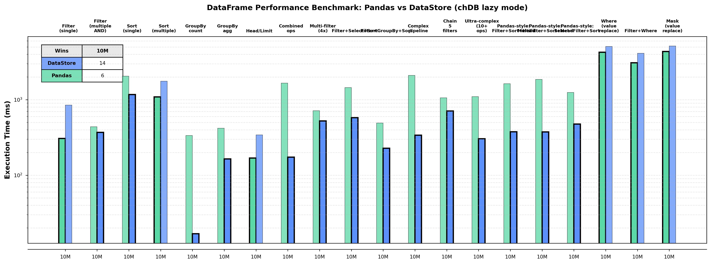

Ten months of building a pandas-compatible engine with coding agents—and what it took to trust the result.
Auxten Wang · Technical Director @ ClickHouse · Creator of chDB · 16 Sep 2026
Who I am
I build chDB at ClickHouse.
1
Created chDB in 2023 — ClickHouse as a Python library
2
ClickHouse acquired it in 2024. I joined as Technical Director
3
Most of my day is chDB. Most of that day is spent with coding agents.
Auxten Wang
@auxten · auxten.com
What chDB is
ClickHouse, inside your Python process.
Think SQLite, but the engine is the one that runs analytics at Anthropic, Cursor, and Cloudflare. No server, no config.
pip install chdb
import chdb
chdb.query("SELECT count() FROM file('orders.parquet')")
# schema inferred · nothing loaded into RAM
70+ file formatszero-copy pandas / Arrowevery CPU corepandas-style API since v4
A rocket engine on a bicycle. Local like SQLite. Analytical like ClickHouse.
The project · chDB DataStore
Change one line. Keep everything else.
Your existing pandas code runs unchanged. Underneath, every chain of calls compiles to one SQL query and runs on the ClickHouse engine.
✓
Faster — all cores, one plan instead of ten copies
✓
Less memory — streams blocks, never the whole table
✓
Same API — if we can't translate a call, it falls back to real pandas
sales_report.py
- import pandas as pd
+ import chdb.datastore as pd
df = pd.read_parquet("events.parquet")
top = (df[df.status == 200]
.groupby("user_id").amount.sum()
.sort_values(ascending=False)
.head(10))
Ten months, one deadline that never moved
Match 600+ pandas behaviors. First beta in weeks.
3 Dec 2025first public beta v4.0.0b0
27 Jan 2026GA release v4.0.0 1,113 commits · +199K lines
Feb 2026first teammate joins the project
11 Sep 2026v4.4.0 · still shipping 11,161 tests in CI
Why so tight
The engine already existed. The API surface was the whole job: hundreds of methods, each with pandas' exact semantics.
Who
One engineer at the start—me—plus coding agents doing most of the typing.
The bill
About $20,000 in agent tokens in the first two months alone. Cheap next to an engineer. Expensive enough to learn from.
github.com/chdb-io/chdb · pull/496 · release history
Why a compatibility layer instead of a better API
Programming now has a BC and an AD.
Before ChatGPT
Fifteen years of humans writing pandas by hand, in public.
Millions of notebooks and Stack Overflow answers
Every data-science course, book, and blog
Clean. Not one line of it generated by a model.
30 NOV 2022
After ChatGPT
Models trained on that corpus treat it as how the world is.
Ask any model for data code: you get pandas
Ask it for a groupby: you get .groupby().agg()
The API stopped being a library. It became a fact.
pandas is the de facto standard — the way the Gregorian calendar is: not the best design, just the one everyone counts in.
The decision
Do not invent a new API in 2026.
HumansAgents are too lazy to learn.
A new API means fighting the model's prior on every single line it writes. A compatible API means every agent on earth is already fluent in your product.
The API is the asset. Replace the engine.
Our unfair advantage
We had a reference implementation.
Most AI-built projects have no way to know if the output is right. We did: pandas itself.
Real notebookGitHub / Kaggle
→
Swap one importpandas → DataStore
→
Run bothsame inputs
→
Compare everythingvalues · dtypes · row order
Every pandas behavior became a test we did not have to design.The agent writes the mirror. pandas is the judge. Neither one gets to grade its own work.
The rule we still follow
Read every thought. Align hard, early.
In the first weeks I read the agent's reasoning for every change, not just the diff. When it reasoned wrong, I wrote the rule down that same day.
That is expensive. It is also the only time the rules are cheap to find.
WHAT WENT INTO THE RULES FILE IN MONTH ONE
1
Everything is lazy: return a plan, execute only when the user looks
2
Never call _execute() or to_df() by hand
3
Tests must mirror pandas and DataStore line by line
4
Compare the whole result: columns, values, order
Each of these came from watching the agent get it wrong once.
All four rules are in the repository today: chdb-io/chdb · AGENTS.md
The shortcut we banned
Agents cheat.
A test fails because the rows come back in a different order. The fastest way to green?
Using reset_index() in tests to mask problems = DataStore bug, not correct test writing.
FORBIDDEN: ❌ Only verifying len() without values ❌ Comments describing expected behaviour without actual assertions ❌# TODO: verify later
REQUIRED: ✓ Complete output comparison (columns + data + order)
February 2026
Then a teammate joined. The old bugs came back.
Two months of rules lived in three places: my head, my chat history, and one agent's memory on one laptop.
A new engineer with a fresh agent re-made mistakes I had fixed in December. Sorted comparisons. Eager execution. Length-only tests.
What was written down
A README, and the AGENTS.md I had started. Maybe 20% of what we actually knew.
↓
What was not
Why we rejected three designs. Which pandas quirks we chose to reproduce on purpose. Every "we always do X here" that I had said to an agent in passing.
Contributors on datastore/ by month: Jan 1 · Feb 2 · Jun 4, plus outside contributors from April onward.
Fix 1 · Code review
Reviewers with zero memory.
We added several review agents to the pull-request flow. On purpose, they know nothing about the project except the rules file.
The daily agent
Knows the history and every workaround. Eventually learns to step around every rough edge—just like I did.
The fresh reviewer
No project context. Told to be critical, rational, and evidence-driven. Checks the FORBIDDEN list on every diff.
In its first pass, a reviewer with no history flagged a masked test, an inconsistent method signature, and three undocumented behaviors—all things the two of us had stopped seeing.Creators and reviewers need different context. That is true for people, and it turned out to be true for agents.
Fix 2 · The deeper problem
Most rules are born inside a decision. Nobody notices.
In a review I say: “keep pandas' exact error message here.” That is a project rule. I did not think of it as one. Neither did the agent.
The agent understood it for that session. Then the session ended, and so did the rule.
ONE AFTERNOON OF REVIEW, THREE RULES NOBODY WROTE DOWN
“Match pandas' error text, not just the exception type.”
→ project rule
“Don't add a fast path here; the SQL builder should handle it.”
→ architecture decision
“We reproduce this pandas quirk on purpose.”
→ the kind of fact a new teammate “fixes” by accident
Fix 2 · ClickMem
Hook every agent. Distill at the end of each session. Share.
Claude Code · Cursor Codex · Hermeshooks installed in each
→
Session endsagent asks itself: what here is worth keeping?
→
Rows in chDBproject · kind · tags · embedding
→
Next session, any machinerecall by project + task
Explicit, not everything
The agent commits refined decisions and rules. Raw chat stays cold. No background mining of transcripts into “insights.”
Scoped
Every memory carries a project and a kind: principle, decision, fact. A rule for DataStore does not leak into another repo.
Shared
One local server on my Mac mini serves my laptop and my agents. Teammates point at the same store; ClickHouse backend when it outgrows one box.
github.com/auxten/clickmem · built on chDB · adapters for Claude Code, Cursor, Codex, Aider, Cline, Windsurf, Zed, Hermes and a generic REST/MCP path
Why a database, not a Markdown file
Recall is one SQL query.
Meaning, project scope, recency, and what helped before—one table, one round-trip, about 10 ms locally.
A Markdown memory file is write-only: it grows forever, every line competes for attention, and nothing expires. Rows can be filtered, ranked, revised, and audited.
recall.sql · the shape of it
SELECT content,
1 - cosineDistance(embedding, :q) AS meaning
-- vector
FROM memory
WHERE project = 'chdb-io/chdb'
-- whose memory
ANDhasAny(tags, ['testing'])
-- keywords
AND created > now() - INTERVAL 90 DAY
-- time decay
ORDER BY pinned DESC,
meaning DESC,
times_used DESC
-- past use
LIMIT 8
Simplified from ClickMem's recall. Production adds privacy filters, conflict status, and latest-version-only.
The same idea, from someone else
Hermes Agent turns conversations into skills.
I use Hermes Agent for a lot of my daily operations. Its best feature: after a task, it writes what it learned into a reusable skill file, without being asked.
They call it self-evolving. It is less magical than that. It is a hook that turns a conversation into a file the next session will read.
That is exactly the right design. Whatever agent you run, this is the pattern to demand from it.
me › when you finish the App Store upload, always check the export-compliance prompt first
hermes › Done. Upload complete. ✓ Updated skill: app-store-publish + step 0: confirm export-compliance dialog + note: prompt appears only on first build of a version
-- next week, new session -- hermes › Loading skill app-store-publish… ✓ Export-compliance confirmed before upload
Hermes Agent · open-source, Nous Research · terminal condensed from a real exchange
Ten months later
11,161 tests. Every one runs on every pull request.
Mirror tests
The bulk of the suite. pandas and DataStore side by side, full output compared: columns, values, order.
Journeys
Whole real-world notebooks replayed end to end: a Kaggle-style exploration, an Amazon-reviews analysis, chained aggregations.
Performance
Speed and memory checks so a correctness fix cannot quietly make the engine slower than pandas.
281TEST FILES
11,161TEST FUNCTIONS
0SORT-BEFORE-COMPARE ALLOWED
Counted on chdb-io/chdb main, datastore/tests, 16 Sep 2026
The Auto Loop
Agents that find their own edge cases.
A Python supervisor runs four agents in a loop. Files on disk are the shared state. Decisions are JSON, not prose.
1
Generator picks a real notebook, writes mirror tests
2
Implementer fixes whatever diverges from pandas
3
Runner executes the full suite
4
Reviewer returns APPROVE / IMPROVE / REJECT — then a PR, or a git rollback
Test files it produced are in the repo: test_exploratory_batch47_multicolumn_multiindex_sparse.py, test_slice_step.py, test_groupby_iteration.py…
Before the numbers · how it actually runs
Lazy chain → compiler → segments.
Segments run in order and pass results along. What comes back is a normal pandas DataFrame, same dtypes and index. A pandas segment mid-chain costs a round-trip through the engine—that is exactly where the next slide shows pandas winning.
What ten months bought
Faster on 14 of 20 everyday ops. One third of the RAM.

×35–52SORTS ON 10M ROWS
33%PEAK RAM VS PANDAS
×71CLICKBENCH DATAFRAME, OVERALL
1LINE CHANGED
10M-row parquet, best of 2, outputs verified identical between engines. ClickBench DataFrame category: 43.77 GiB, same hardware, pandas ×71 slower overall.
Where pandas still wins
Six of twenty. We say so in the docs.
Small data
Under about a million rows, pandas is faster. Compiling to SQL has a fixed cost. Keep pandas there.
Bulk value replace
mask / where rewrite a column in place. We round-trip it through the engine. pandas wins on speed and RAM.
Anything we can't translate
Falls back to real pandas for that step. Correct, but no speedup. The logs tell you exactly which step.
The oracle that made the project possible also makes it impossible to hide this. Every benchmark row is a mirror test.
What I'd tell your team
Ten rules we still follow.
01
Build on the de facto standard. Agents are too lazy to learn a new API.
06
Review with zero memory. Critical and rational. Builders and reviewers need different context.
02
Find your oracle first. Something other than the model must be able to say “wrong.”
07
Files over chat history. Filesystem as shared state. Decisions as JSON. Rollback on failure.
03
Read the reasoning early, not just the output. When it drifts: was I wrong, or unclear? Different fixes.
08
Capture rules where they're born. Distill at session end. Scope by project. Share across agents and people.
04
Rules beat prompts. Watch the shortcut, then ban it in writing. XFAIL, never a silent skip.
09
Every failure becomes a test that runs forever. Let the loop hunt the next one. Humans review the PR.
05
Rules live in the repo, not in your head. Keep the file lean: am I adding another button to the iPhone?
10
Prompt engineering is the entry ticket. System engineering is the moat.
All ten held across Claude Code, Cursor, Codex, Hermes, and GitHub Copilot coding agent.